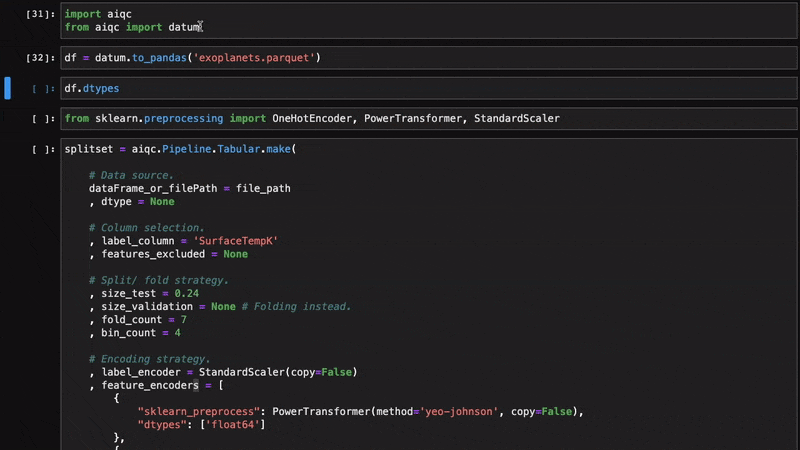
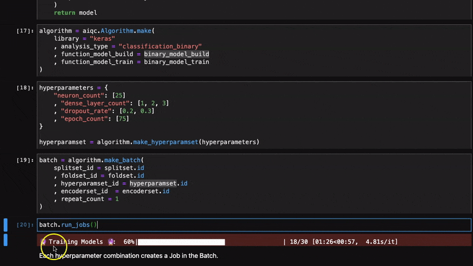

{kind=link}
Overview & Features¶
Value Proposition¶
AIQC is an open source Python package that simplifies data preparation and hyperparameter tuning for batches of deep learning models without the need for an expensive cloud backend.
It empowers researchers by reducing the programming and data science know-how required to integrate machine learning into their research.
It makes machine learning less of a black box by reproducibly recording experiments in a file-based database that requires no configuration.
Feature Highlights¶
I. Sample Preparation¶
{kind=link}
Ingest flat files (csv, tsv, parquet, pandas, numpy) and images (pillow).
Name the columns that will serve as the Labels and Featureset.
Split, cross-fold, & stratify samples with simple args (fold_count=5).
Leakage-free dtype/ column encoders applied when fetching samples.
II. Model Training & Hyperparameter Tuning¶
{kind=link}
Queue a batch of training jobs on a background process.
Dictonary of hyperparameters passed into models funcs as **kwargs.
Flexibly define functions for building and training models.
Topology params (# layers, conic layers). Repeat training (repeat_count=3).
III. Model Performance¶

Automated performance metrics & visualizations for splits/ folds.
Define multi-metric (acc & val_loss) criteria for early stopping.
Captures history metrics for learning curves.
Aggregate metrics for sets of cross-folded jobs.
IV. Easy Setup¶
No infrastructure/ app/ cloud needed, just pip install.
IDE (Jupyter, RStudio, VS Code) and OS (Win, Mac, Lin) agnostic.
High & low level APIs make for a gentle learning curve.
Example datasets built into package. Example image datasets in github repo.
Records experiments in a file-based SQLite database that requires no configuration.
Compatibility Matrix¶
Deep Learning |
Keras |
PyTorch |
MXNet |
|---|---|---|---|
Classification (binary) |
✓ |
→ |
→ |
Classification (multi) |
✓ |
→ |
→ |
Regression |
✓ |
→ |
→ |
Generation |
→ |
→ |
→ |
Reinforcement |
TBD |
TBD |
TBD |
✓ | already supported.
→ | to do (contributions welcome).
TBD | lower priority.
Data Preparation |
Tabular |
Image |
Sequence |
|---|---|---|---|
Splitting |
✓ |
✓ |
→ |
Folding |
✓ |
✓ |
→ |
Encoding |
✓ |
TBD |
→ |
Dimensionality reduction |
→ |
TBD |
→ |
Imputation |
→ |
→ |
→ |
Cleaning |
→ |
→ |
→ |
Anomaly/ outlier detection |
→ |
→ |
→ |
Feature engineering |
→ |
TBD |
→ |
Clustering/ PCA |
→ |
→ |
→ |